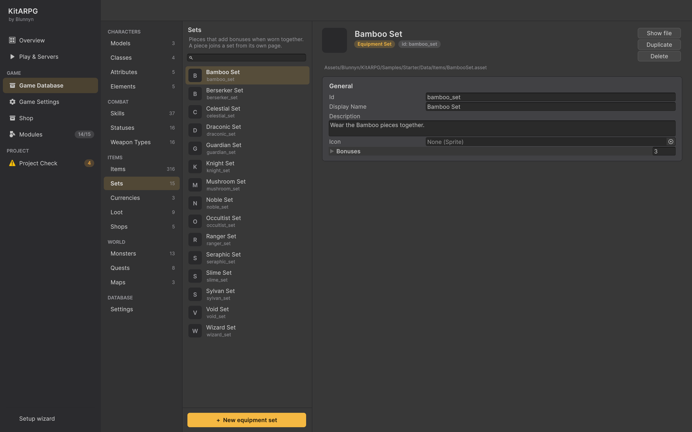
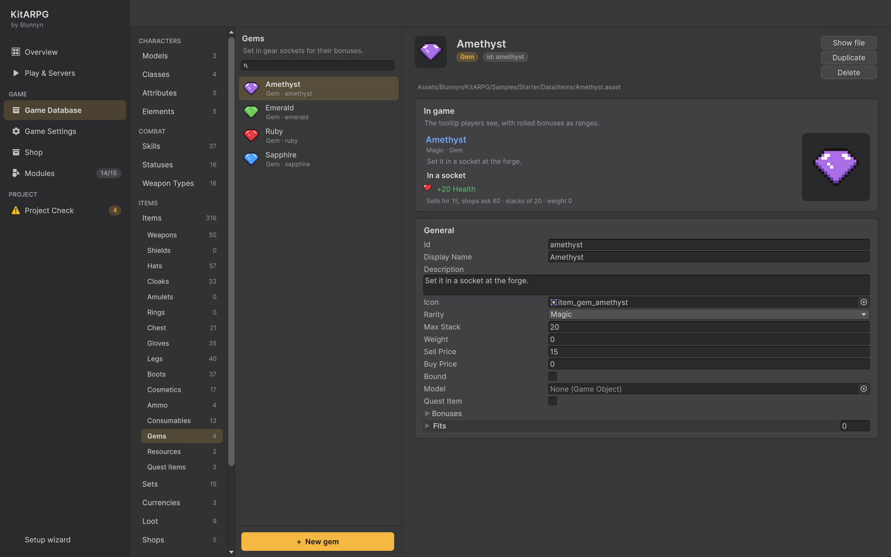

套装、强化与镶孔
让装备超越其基础加成的三种方式：装备套装奖励同时穿戴多件部件，强化规则让玩家用金币和符文逐步提升装备（+1、+2……），镶孔可以镶嵌带有自身加成的宝石。本页介绍套装、强化规则和宝石的每个字段、分解，以及如何一步步制作套装。
玩家进行强化、分解和镶嵌宝石的锻造 NPC 见锻造。
装备套装

套装是一组部件，同时穿戴其中多件不同部件时提供额外加成。每件部件指向其套装；套装按部件数量保存加成。
套装在哪里
Game Database > Items > Sets 列出套装。在那里或用 Create > KitARPG > Items > Equipment Set 创建一个。部件在自己的页面上加入套装，即 Look and wear 卡片中的 Set 字段。
字段
| 字段 | 作用 | 默认值 |
|---|---|---|
| Id、Display Name、Description、Icon | 与所有游戏数据资源相同。 | |
Bonuses（bonuses） |
加成，按部件数量排序：两件、四件、整套…… | 空 |
Pieces（pieces） |
必须穿戴多少件不同的套装部件。 | 0 |
Modifiers（modifiers） |
该档位增加的内容：一个完整的修正值组合，因此它可以提升数值、百分比、元素伤害、抗性、属性和技能等级。 | 空 |
档位如何计算：
- 套件统计已穿戴装备中该套装的不同部件。同一枚戒指的两个副本算作一件。
- 达到的每个档位都叠加在其下方的档位之上。如果在 2、3 和 5 件时有加成，穿戴 5 件会获得全部三档。
- Pieces 为 0 的档位永远不会生效。
- 时装位置不计入套装。
- 武器也可以属于套装；它们像盔甲一样作为部件列出。
玩家看到什么
- 物品提示框只显示套装名称以及阅读者穿戴了多少件："Knight Set (3/5)"。
- 完整的套装显示在 Set window 中，从物品菜单（右键）的 View set 打开。部件排成一行：已穿戴的点亮并带勾号，其余的变暗。选择某件部件会显示其图标、名称、类型和等级，并有 Effects 标签页（其加成，以范围显示）和 Conditions 标签页（等级、职业和栏位，不满足时以橙色显示）。底部的下拉框显示每个部件数量对应的加成（已与其下方的档位累加），并默认打开已达到的最高档位。
示例套装
| 套装 | 部件 | 适用 | 加成 |
|---|---|---|---|
| Knight | Helm、Armor、Gloves、Leggings、Boots | Warrior | 生命值、中性和土抗性、Vitality。3 件：+1 Cleave。5 件：+8% 生命值。 |
| Ranger | 同样五件 | Hunter | 暴击、风伤害和抗性、Agility。3 件：+1 Power Shot。5 件：+5% 暴击，+10% 攻击速度。 |
| Wizard | 同样五件 | Mage | 法力值、治疗、火伤害和抗性、Intelligence。3 件：+1 Fire Bolt。5 件：+10% 法力值，+6 火伤害。 |
| Noble | 同样五件 | 任何职业 | 生命值、治疗加成、移动速度、水抗性、Luck。5 件：所有技能 +1，+8% 移动速度，+10% 治疗加成。 |
示例中还有 Slime、Mushroom、Sylvan、Occultist、Bamboo 和 Draconic 套装，以及由头盔、手套、靴子和披风组成的四件套（Berserker、Void、Celestial、Seraphic、Guardian）。
制作套装
本例制作一个三件套 Storm Set（兜帽、手套、靴子），在 2 件和 3 件时有加成。
- 在 Game Database > Items > Hats、Gloves 和 Boots 中制作三件部件（参见制作一件盔甲）。设置它们的 Id 和 Display Name。
- 打开 Game Database > Items > Sets 并按 + New equipment set。在 Id 中输入
storm_set，在 Display Name 中输入Storm Set。 - 在 Bonuses 中添加两个条目：
- Pieces 2，Modifiers > Damage：Air，4。
- Pieces 3，Modifiers > Stats Percent > Attack Speed
0.08（8%），以及 Skills：Power Shot，等级 1。
- 打开每件部件，把其 Set 设为 Storm Set。
- 进入 Play，穿上两件，检查 Character 窗口：+4 风伤害。穿上第三件：风伤害保留，攻击速度提高 8%，并且如果角色会 Power Shot，它会以高一级的等级施放。
套装加成会与其下方的档位叠加。让每个档位增加新的东西，而不是重复上一档的加大版本，否则穿齐整套会获得双倍效果。
强化
强化规则说明装备如何一步一步提升（+1、+2……）、每一步的花费、成功几率、失败时会发生什么，以及分解装备会得到什么。游戏数据库有默认规则（Game Database > Settings，Upgrade Rules）；任何装备都可以使用自己的规则。
强化规则在哪里
用 Create > KitARPG > Items > Upgrade Rules 创建强化规则，然后在 Game Database > Settings > Upgrade Rules（upgradeRules）中为所有装备设置，或在某件装备的 Upgrade 字段中只为该装备设置。
当 Upgradable 开启且装备有规则（自己的或数据库的）时，它就可以被强化。弹药和时装默认 Upgradable 关闭。
字段
| 字段 | 作用 | 默认值 |
|---|---|---|
| Id、Display Name、Description、Icon | 与所有游戏数据资源相同。 | |
Steps（steps） |
每一步一个条目。第一步把装备从 +0 提升到 +1。步数即最高强化等级。 | 空 |
Protection（protection） |
一个物品（保护卷轴），玩家可以选择消耗它，使失败的一步保持装备原样。 | None |
Salvage（salvage） |
分解或损坏装备时给予的东西：物品和数量的列表。第一行随稀有度、强化等级和装备等级增长。 | 空 |
Salvage Per Level（salvagePerLevel） |
装备每有一级强化，第一行分解产物增加的数量。 | 1 |
Salvage Per Rarity（salvagePerRarity） |
稀有度每高于 Common 一档（Magic 1、Rare 2、Epic 3、Legendary 4），第一行分解产物增加的数量。 | 1 |
Salvage Levels Per Extra（salvageLevelsPerExtra） |
装备需求等级每达到这么多级，第一行分解产物多给一个。0 关闭此项。 |
10 |
Unsocket Gold（unsocketGold） |
从镶孔中取出宝石所需的金币。宝石会退还。 | 50 |
每一步：
| 字段 | 作用 | 默认值 |
|---|---|---|
Gold（gold） |
这一步花费的金币。 | 0 |
Materials（materials） |
符文、矿石，背包里的任何东西：物品和数量。 | 空 |
Chance（chance） |
成功几率，整数百分比，从 0 到 100。 | 100 |
On Fail（onFail） |
这一步失败时装备会发生什么。 | Keep |
Bonus Percent（bonusPercent） |
这一步为装备的加成和武器伤害增加的整数百分比。 | 5 |
On Fail 选项：
| 选项 | 会发生什么 |
|---|---|
| Keep | 只损失花费。装备保持原等级。 |
| LoseLevel | 装备降一级。 |
| Reset | 装备回到 +0。 |
| Break | 装备被摧毁，留下其分解产物。其中的宝石会丢失。 |
强化如何进行
- 玩家打开锻造 NPC，选择一件装备（背包中或已穿戴的），然后按强化，可选择是否使用保护。
- 服务器检查装备有规则且有下一步，并且玩家有足够的金币和材料。
- 无论结果如何，金币和材料都会被消耗。
- 服务器按几率掷骰。成功时，装备升一级。
- 失败时，如果玩家选择了保护、持有保护物品，且这一步的 On Fail 不是 Keep，则消耗一个保护物品，装备保持原样。否则执行 On Fail。
副本的强化等级显示在其名称中："+3 Knight Helm"。提示框会加上 "Upgraded +3: +18% to its bonuses"。
强化有什么效果
强化等级为 N 的装备按第 1 到 N 步的 Bonus Percent 之和提升：
- 其固定加成和随机加成相加后乘以
1 + percent / 100，然后取整为整数和整数百分比。 - 武器的伤害取值以同样方式相乘并取整。
- 宝石和套装加成不会提升。
例如，按示例规则（前五步每步 +6%），+3 的剑有 +18%：5 到 8 伤害的剑打出 6 到 9，随机到的 +10 生命值变为 +12。
示例规则：Standard Upgrades
十步，以金币和 Forge Runes 支付，前期安全，后期有风险：
| 步 | 金币 | Forge Runes | 几率 | 失败时 | 加成 |
|---|---|---|---|---|---|
| +1 | 20 | 2 | 100% | Keep | 6% |
| +2 | 80 | 4 | 100% | Keep | 6% |
| +3 | 180 | 6 | 90% | Keep | 6% |
| +4 | 320 | 8 | 80% | LoseLevel | 6% |
| +5 | 500 | 10 | 70% | LoseLevel | 6% |
| +6 | 720 | 12 | 60% | LoseLevel | 10% |
| +7 | 980 | 14 | 50% | Break | 10% |
| +8 | 1,280 | 16 | 40% | Break | 10% |
| +9 | 1,620 | 18 | 30% | Break | 10% |
| +10 | 2,000 | 20 | 20% | Break | 10% |
Protection 是 Protection Scroll。Salvage 是 3 个 Forge Runes，每级强化多 2 个，每档稀有度多 2 个，每 10 级需求等级多一个。Town 中的铁匠 Garrick 经营锻造台，出售符文、保护卷轴、宝石、箭和弩矢。
分解
分解把背包中的装备拆成材料。只有带有强化规则或自己 Salvage 列表的装备可以分解。
装备会给予：
- 它自己的 Salvage 列表（如果有），否则是其强化规则的 Salvage。
- 当装备有强化规则时，第一行增加：Salvage Per Rarity × 稀有度（Common 0 到 Legendary 4）+ Salvage Per Level × 强化等级 + 需求等级 ÷ Salvage Levels Per Extra（向下取整）。
- 其镶孔中的宝石会退还。
按示例规则的例子：一顶 Rare（2）、10 级、+2 的头盔分解为 3 + 2 × 2 + 2 × 2 + 10 / 10 = 12 个 Forge Runes。
锻造台打开时，物品菜单提供 Salvage all (N)：一次性分解背包中该物品的所有普通副本，最多 100 个。强化过或镶有宝石的副本会被排除；请逐个分解它们。背包必须有空间容纳所有分解产物，否则什么都不会发生。
损坏的装备（失败的一步为 Break）给予同样的分解产物，但其宝石会丢失。
镶孔与宝石

Sockets 大于 0 的装备可以镶嵌那么多颗宝石。装备穿戴时，每颗宝石增加其加成。
宝石字段
宝石位于 Game Database > Items > Gems，或用 Create > KitARPG > Items > Gem 创建。宝石拥有物品的所有字段，外加：
| 字段 | 作用 | 默认值 |
|---|---|---|
Bonuses（bonuses） |
在镶孔中增加的内容：一个完整的修正值组合。宝石不随机；每个副本都相同，因此可以堆叠。 | 空 |
Fits（fits） |
它适配的装备栏位。留空表示任何栏位。 | 空 |
宝石的提示框显示 "In a socket" 及其加成，有限制时显示 "Fits ..."。带有镶孔的装备的提示框会列出每个镶孔：宝石及其加成，或 "Empty socket"。
镶嵌和取出宝石
在锻造台：
- 在背包中右键点击宝石，把它镶嵌到所选装备中。它会放入第一个空闲的镶孔。装备必须有镶孔、有空闲镶孔，且栏位适配该宝石。
- 在锻造窗口中右键点击已镶嵌的宝石把它取出。花费装备强化规则中的 Unsocket Gold（装备没有规则时免费），且背包需要有空间放宝石。
示例中有四种宝石，由 Garrick 出售：Ruby（+3 Strength）、Sapphire（+3 Intelligence）、Emerald（+3 Agility）和 Amethyst（+20 生命值）。示例武器有 1 个镶孔（Rare 及以上为 2 个），胸甲 2 个，头盔 1 个。
单人模式和 MMO
规则在两种模式下相同，并在服务器上运行：客户端发出请求，服务器检查、掷骰并回应。每个副本的强化等级（refine）和宝石（gems）随之保存：MMO 中在副本的 Extra 列中，单人模式中在角色的 JSON 内。在 MMO 中，每次分解都会写入游戏日志（item.forge，"salvaged into ..."）。
提示
- 让前几步保持安全（100%，Keep），让每个玩家都能体验强化。
- 为保护卷轴定价，使它只在 Break 步骤上才值得使用。
- 使用 Fits 为每个栏位制作宝石类型：武器用攻击宝石，盔甲用防御宝石。
常见错误
- 装备无法强化。 Upgradable 关闭了，或装备和数据库都没有强化规则，或它已在最后一步。
- 装备无法分解。 它没有强化规则，也没有 Salvage 列表。
- 整套加成过大。 档位会累加。降低前面的档位或让最后一档小一些。
- 两枚相同的戒指不算作两件套装部件。 套装统计的是不同的部件。